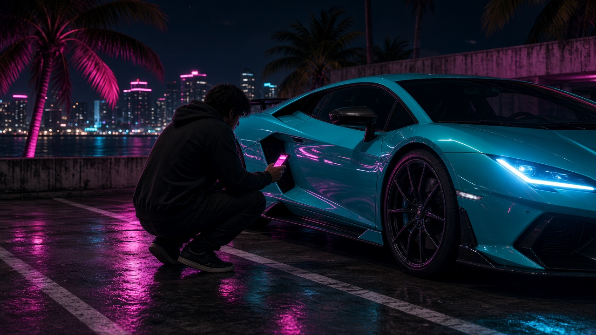

GTA 6 tips
Why Can't I Steal Cars in GTA 6? | Peekhole

Short answer: the fancy car you want is probably keyless. In GTA 6, keyless cars can't be hotwired. You need a key cloner, and you don't get one until Chapter 3.
Why is this a big deal right now?
A clip of a player getting blocked from a parked high-end car spread fast on X this week. Some fans miss the old smash-and-go chaos. Others say it's realistic and that full access just comes later.
How does stealing work now?
PC Gamer lays it out. Most cars are locked and alarmed. You can still smash a window and hotwire a regular car, but the alarm draws attention. In Chapter 1's "Unwanted Attention" mission, Cal sets you up with the Waink It app, which scans a car to show if it's locked, alarmed, keyless, or tracked.
When do you get the slim jim and key cloner?
The slim jim comes in Chapter 2 from a mechanic named Moses. It opens locks quietly, with no broken glass and no alarm, but it still won't start a keyless car. The key cloner arrives in Chapter 3's "Steal the Zorruso for Randy." It unlocks a keyless car and starts it for you.
What about trackers?
Advanced trackers call the cops. Keep driving fast so the signal can't get out. Slow down too long and the police find you.
Sources
- PC Gamer: How stealing cars has changed in GTA 6
- PC Gamer: How to get a slim jim in GTA 6
- PC Gamer: How to clone keys in GTA 6
Peekhole take: Vice City's hottest rides now play hard to get. You have to earn the keys, which honestly is very on brand for us.